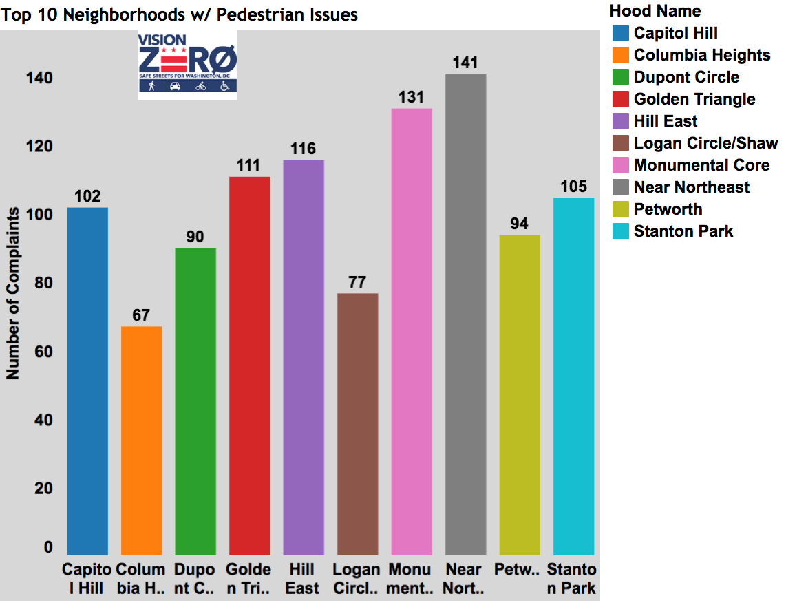
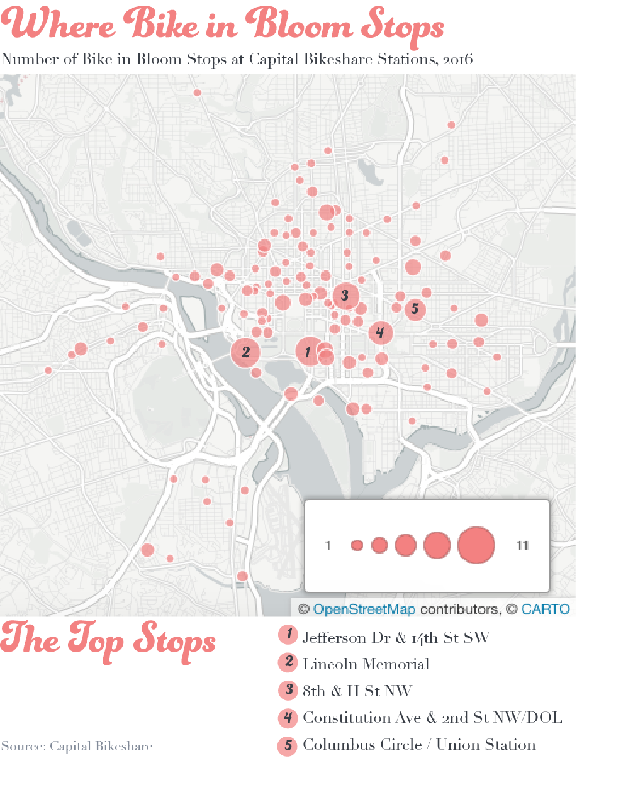
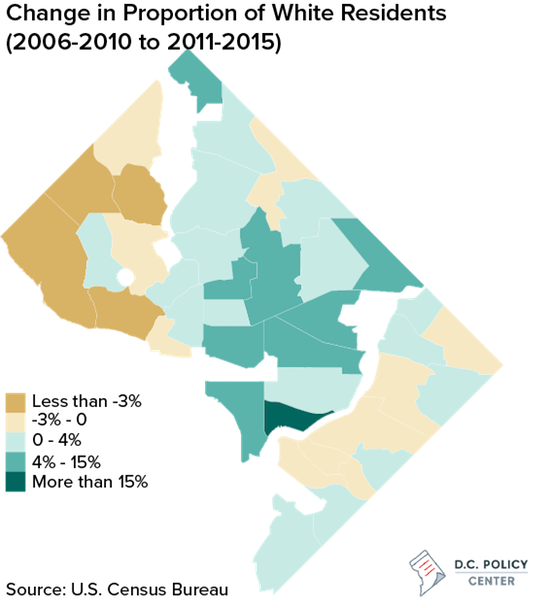
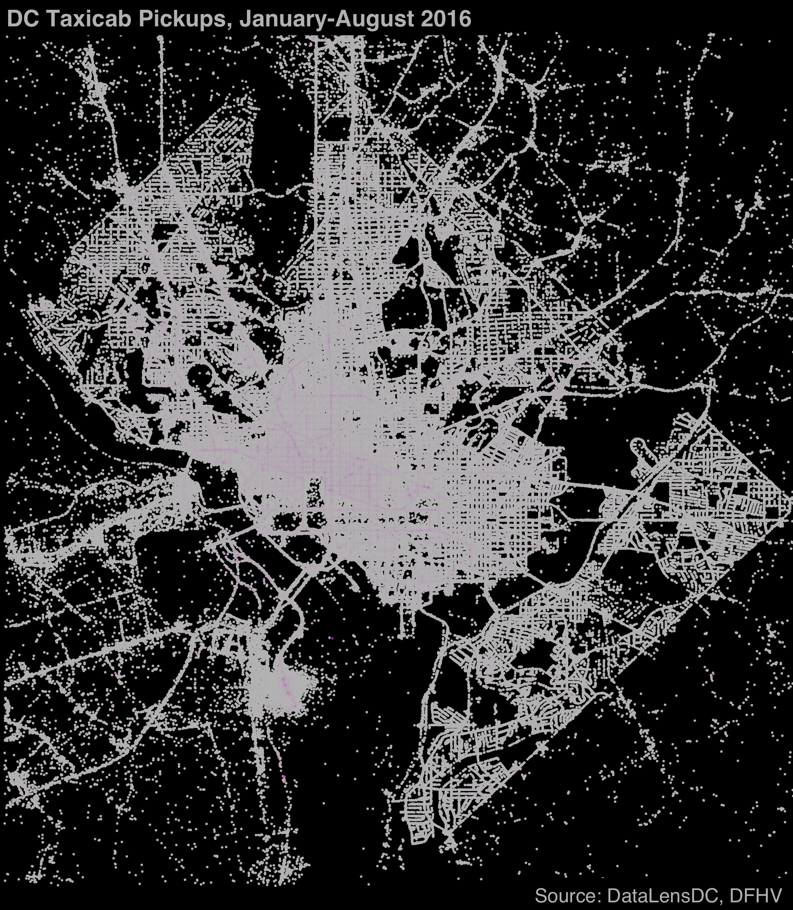
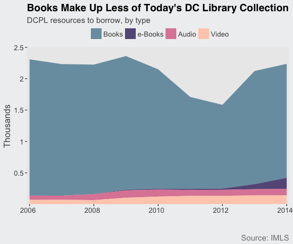
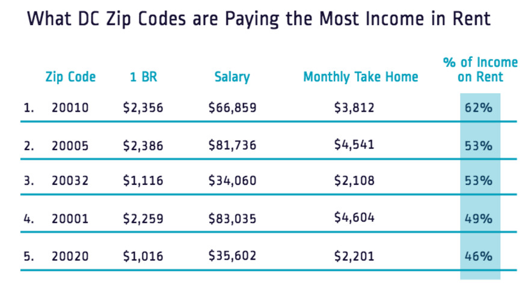
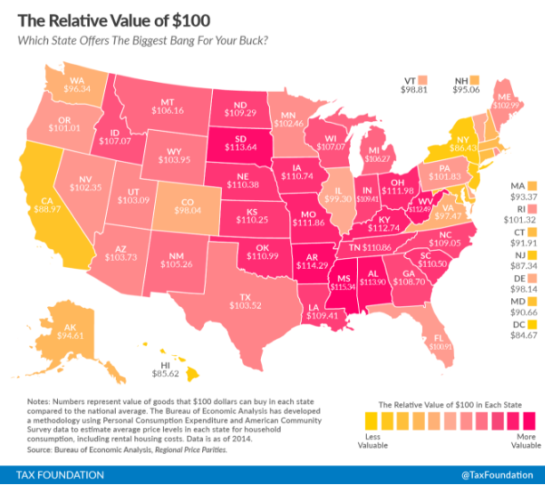
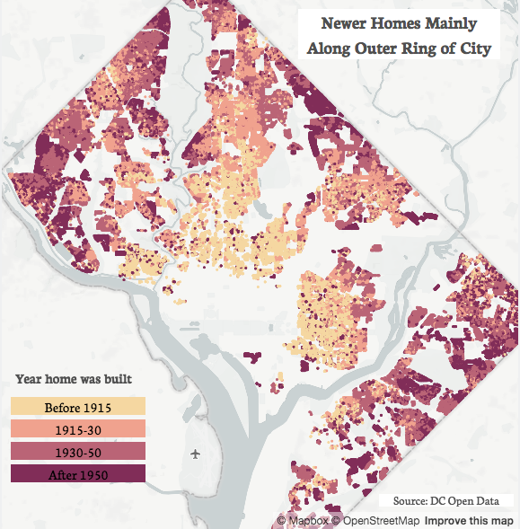
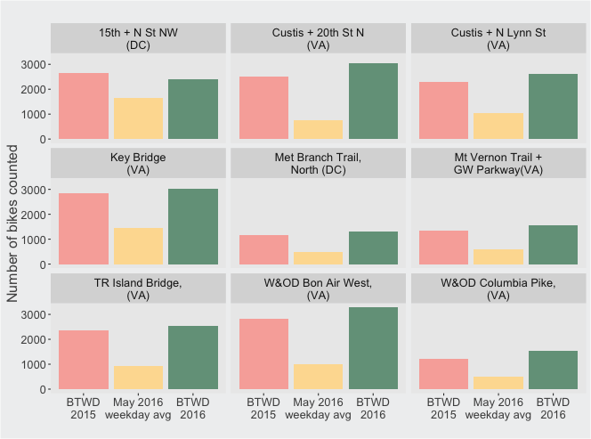

Recent research from a team headed by Stanford economist Raj Chetty made headlines last year when it outlined the stark divide in health outcomes between high- and low-income Americans. As the New York Times reports, the Health Inequality Project found that longevity has steadily increased across the nation for the richest Americans, but life expectancy for the poor is highly variable depending on where they live. In this measure, Washington, D.C. does not fare well: Among the 100 most populated counties, D.C. ranks 65th by average life expectancy for the poorest 20 percent of its residents.
While the Health Inequality Project’s study focuses at life expectancy disparities at the county level, the CDC’s and Robert Wood Johnson Foundation’s 500 cities project provides more color to the stark health divide between D.C.’s richest and poorest. Using this data to compare the District’s 32 highest income census tracts, which all make over $110,000 a year, with the 32 lowest income tracts, with annual income under $35,000, reveals striking disparities across behavior, health, and chronic conditions.
The wealth gap in healthy activities
Members of D.C.’s poorest communities were twice as likely to be obese, and report regularly receiving fewer than 7 hours of sleep. They were also three times as likely not to exercise. Higher rates of obesity, along with less sleep and exercise, are well-documented effects of longer commute times, fewer walkable areas, food deserts, crime, and stress associated with poverty. The one reported unhealthy activity wealthiest residents were more likely to partake in was binge drinking. Read on...
With a new proposed Data Policy, release of high profile datasets on topics like 311 and taxicabs, and Open Government Advisory Group, the D.C. Government looks interested in moving up the ranks of open data cities. This is good news for policymakers, businesses, and citizens. But with open data comes the duty to use it responsibly.
This doesn’t always happen. A recent example is an analysis of pedestrian safety that declared that the most dangerous neighborhoods for pedestrians are largely located in and around Capitol Hill, accounting for 21 percent of pedestrian traffic complains within the top 10 neighborhoods (see below).
Capitol Hill and surrounding neighborhoods in top 10 for reported neighborhood issues, according to Vision Zero data

Source: District Ninja
The findings were based on data from the city’s Vision Zero initiative to reach zero fatalities during transit by 2020. In July 2015, D.C. released an app and website as part of the initiative allowing citizens to report pedestrian, bike, or driving safety issues. The District took a great “open by default” approach, quickly making the data publicly available on opendata.dc.gov, and actively engaging the data community.
All data is not created equal, though, and how data is created must be factored into any analysis. Read on...
Despite a cold snap and and a snowstorm that will likely result in a greatly diminished peak-bloom period, the National Cherry Blossom Festival is still on. And that means it’s time for the return of one of Capital Bikeshare most popular promotions: the #BikeinBloom, in which the system adds a single pink bike to its fleet of nearly 4,000. For four weeks, the pink bike is released into the Capital Bikeshare system—which spans DC, Arlington, Alexandria, Fairfax County, and Montgomery County—for riders to find, ride, and photograph.
But spotting a single bike among the entire network sounds daunting. Looking back at the bike’s movements during 2016’s Cherry Blossom Festival might provide some insight for Capital Bikeshare users hoping to find this year’s model.
The pink bike was the most popular vehicle in Capital Bikeshare’s system for the four weeks it was available last year. In 2016, the bike was used 220 times, compared to a fleet-wide average of 77 uses in the same period. But that doesn’t mean the bike in bloom was especially well-traveled. Despite its constant ridership, the pink bike only made to just over a quarter of the nearly 400 stations Capital Bikeshare had at the time. Not surprisingly, it was parked most frequently at docks along the National Mall or other tourist destinations, as shown in the map below. Read on...

The Census Bureau recently announced that D.C.’s population has risen to a four-decade high of almost 700,000, a boom driven largely by an influx of new residents. These new District residents have undeniably changed the demographic makeup of D.C., which on the whole has become whiter, wealthier, and younger over the past decade.
However, these changes have not happened consistently across all parts of the District. We can see where these trends have been most pronounced when we look at data from individual neighborhoods “clusters” (group of neighborhoods that are frequently used for data analysis and planning purposes). The maps below show changes in race, wealth, and age by neighborhood cluster between two five-year spans, from 2006-2011 and from 2011-2015. Read on...

From January to August 2016, DC cabs picked up more than eight million riders. From looking at when and where, we can see the busy nightlife scene on U Street NW, the midday tourist boost on the Capitol Grounds, and the sheer diversity of reasons people go to Dupont Circle. Read on...
DC is often cited as the #1 place for women in tech, but you wouldn’t know it by attending some of the area’s biggest tech meetups. The region has an active tech and data meetup community that hosts professional events. They can be great places to learn, network, and job search. Unfortunately, these events rarely reflect the industry’s diversity in DC, and that can have far-reaching effects. Taken back by the speaker gap the data revealed, I’ve also created wespeaktoo.org to help promote women speakers.
I looked at the gender diversity of speakers at 114 events in 2016 from 16 DC area meetups. These meetups were selected because they had over 1,000 members and typically held educational events featuring a single or few speakers. The results were startling. In 2016, there were no single-speaker events where a woman was the speaker. Read on...
As reading habits change, so does the DC Public Library. With the number of books down, but other media and library visits up, the library is much more than its book collection, as I recently wrote for Greater Greater Washington.
The meaning of curling up to a book has broadened over the past decade. It could mean an actual physical book, but also scrolling down your smartphone or listening to a book over headphones. With a limited collections budget, how has the DC Public Library balanced traditional physical books with newer mediums? Read on...

With colder weather comes colds. As recently reported by Greater Greater Washington, emergency response times are longer in Wards 7 and 8, located east of the Anacostia. But what about access to non-emergency medical care? Suppose you come down with the flu. Besides chicken soup and bedrest, how will you get better? Where you live in the city may make a difference. Read on...
On a weekly basis, the email inbox at UrbanTurf is filled with new reports and studies from rental and real estate start-ups highlighting one trend or another about DC’s housing market. Asked by the popular real estate blog to look into the methodology behind these reports, I found a lot to be desired. Read on to learn the issues with these reports, like recent the RadPad findings shown below...

Earlier this month, a map saying that $100 will buy you less in DC than any other state made the online rounds. But while it's true $100 will buy you less in DC, it's misleading to leave it at that because DC's higher incomes mean it's easier to make $100 here than in many other places.

The above map, which came from the Tax Foundation's Alan Cole uses the relative value of $100 across states to highlight how prices of the same goods vary. "The same amount of cash can buy you comparatively more in a low-price state than in a high-price state," writes Cole. For instance, in Mississippi, the state with the lowest prices, you could spend $100 to buy goods that would on average cost $115.34 in the US. Conversely, DC has the lowest relative value of $100: If you spend $100 in DC you would receive goods that on average cost $84.67.
Concluding that DC is the most expensive place in America is a bit disingenuous. Read on...
While all of DC is a city, some of its residential neighborhoods feel more like a city than others. This feels intuitive walking along the smaller row houses of Capitol Hill compared to the more expansive mid-century homes in upper Northwest.
The maps below show this divide between homes in the inner and outer sections of the city by house type, year built, and lot size. Generally, homes located closer to the city core are older, built upon smaller lots, and almost entirely row houses. There is a strong interrelatedness between these three housing characteristics that can be seen by the almost identical areas of light shading across the maps. The area extends from Capitol Hill to Georgetown and from Shaw up to Petworth. Conversely homes outside of these neighborhoods tend to have been built later, on larger lots, and more likely to be single (self-standing) or semi-detached homes. Read on...

In recent years DC has seen a large influx of new restaurants and bars. But these new businesses aren’t necessarily opening in the same neighborhoods as they would have five or ten years ago. And for many, where they go out on Saturday night has been slowly moving east. The map below shows the percent of today's nightlife establishments (bars, nightclubs, and restaurants with liquor licenses) that opened after 2010, for neighborhoods with more than 10 nightlife establishments. Read on...
DC is a city with a diversity of people, businesses, and neighborhoods. But walking along the city’s residential streets you may notice one aspect of the city that isn’t particularly diverse at all - facades of DC homes. DC is home to almost exclusively brick homes.
The map below shows each residential properties in the District by facade. Read on...
This past Friday brought sunny weather and Bike to Work Day, an annual celebration of biking throughout the DC region. But while some may forego a car, train, or bus to celebrate, Bike to Work Day is just like any other weekday for many. Biking is on the rise throughout DC and will likely become even more popular with the upcoming Metro maintenance.
How did this year’s Bike to Work Day look across some of the region’s most popular bike routes? Automatic bike counters installed by DDOT and Arlington County that collect real-time data on foot and bike traffic give an idea. The chart below compares the number of bike rides for this year’s Bike to Work Day to average weekday ridership so far in May and last year’s Bike to Work Day (BTWD). Read on...
Bike to Work Day 2016 Brings Many More Bikers
Bike counts for average May weekday to date and Bike to Work Day (BTWD) 2015 and 2016

Source: DDOT and Arlington County, via bikearlington.com
There’s a long-held debate around Washington over which jurisdiction is home to the worst drivers. With jobs in DC split about evenly between the city and the suburbs, the District sees drivers from all over put to the test with its one-way streets, traffic circles, back-in-only spaces, and parallel parking. What insight can open data provide into the prowess of the region’s drivers? Newly released parking-ticket data sheds some light.
The District issued more than 1.5 million parking tickets in 2015, generating more than $73 million in fines. While DC residents received a little less than one-third of the tickets, they were not actually the top recipients. That honor goes to motorists from Maryland, who accrued more DC parking tickets than drivers from anywhere else in the country. Maryland drivers received 120,000 more DC parking tickets than DC residents, for a total of 554,265 parking tickets worth over $25 million in fines. The trend is consistent with previous years and, perhaps more importantly, regional lore.
This does not necessary mean Maryland drivers are the worst drivers in the District. Read the rest and see how other states fare...